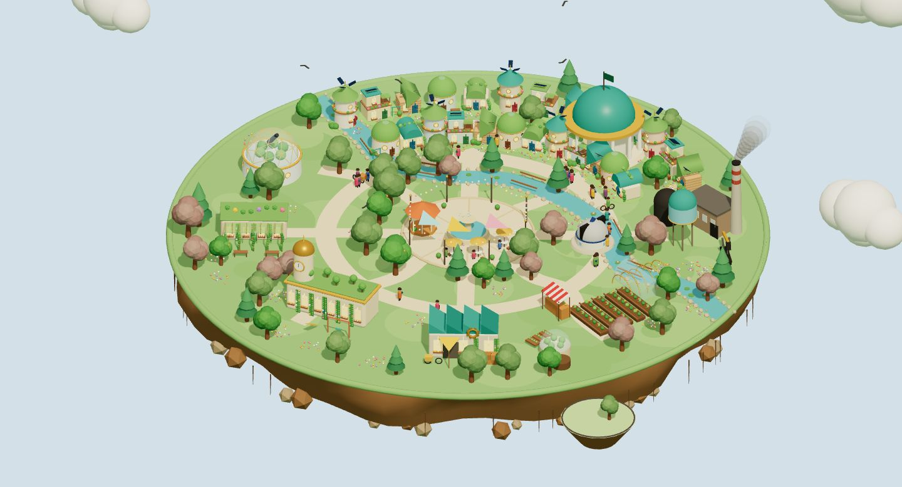

| 1 | 1-3 | Mercado y asamblea: quién decide qué se produce y cómo se reparte. Sucesos, retos y votaciones. |
| 2 | 4 | En diseño: decisiones con riesgo e incertidumbre. |
| 3 | 5-7 | Empresas con propietario: costes, técnicas, beneficio, paro y quiebras. |
| 4 | 8-9 | Competencia entre empresas y la central de energía, que es la única. |
| 5 | 10-13 | El PIB del pueblo, de dónde sale el crecimiento, el desarrollo y el clima. |
| 6 | 14-16 | Sindicato y negociación, paro y desigualdad. |
| 7 | 17-18 | En diseño: impuestos, pensiones, déficit y deuda. |
| 8 | 19-21 | El dinero y el banco del pueblo. |
| 9 | 22-23 | Comercio y migraciones con el pueblo vecino. |
| 10 | 24-26 | Las finanzas: un segundo banco, riesgos y crisis. |